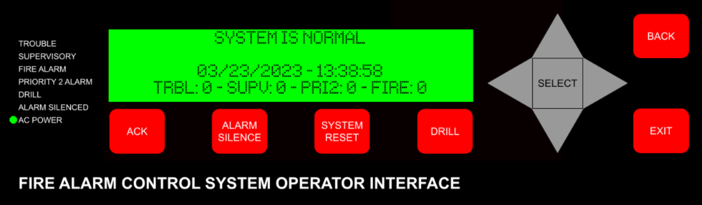

History
The EBA Virtual Fire Panel started out as a small panel, with few features. Version 1 originally included Fire, Priority 2, and Supervisory alarms. It also included the following features: Fire Drill, Manual Evac, Point Disable, Selectable Horn Coding, Point Rename, and Protection Suspend.
The first version continued to be added on to, and features such as History Logs, PA Broadcast, Priority 2 Drill, and Walk Test were added. Eventually, limitations of the first version (such as how the code was written, use of a 40*4 character LCD, etc.) resulted in the creation of Version 2. Version 1 is still available online here, and no download is required.
Version 2 is the most recent complete version. It includes all features from version 1, alongside Custom Speaker Sequences, Passcode Protection, Lamp Test, 2 Stages, Read Status, Full Point Customization, Programable Function Keys, and more!
Eventually, limitations with the back-end of the second version resulted in the creation of a third version. Version 3 is in early development and will include a clean-up and simplification of the code, several new customization options, and multiple profiles.